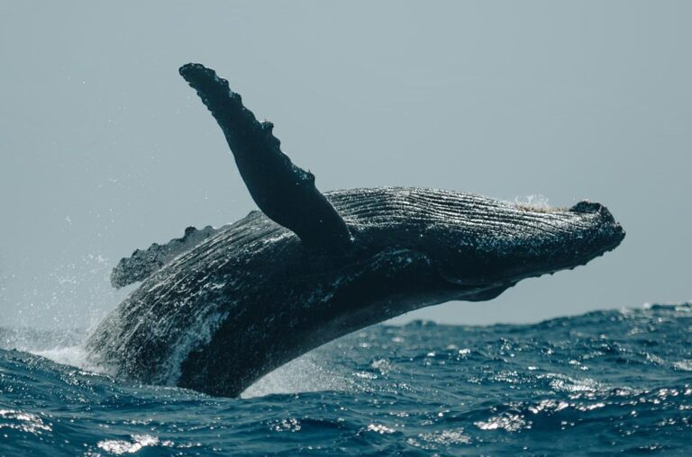
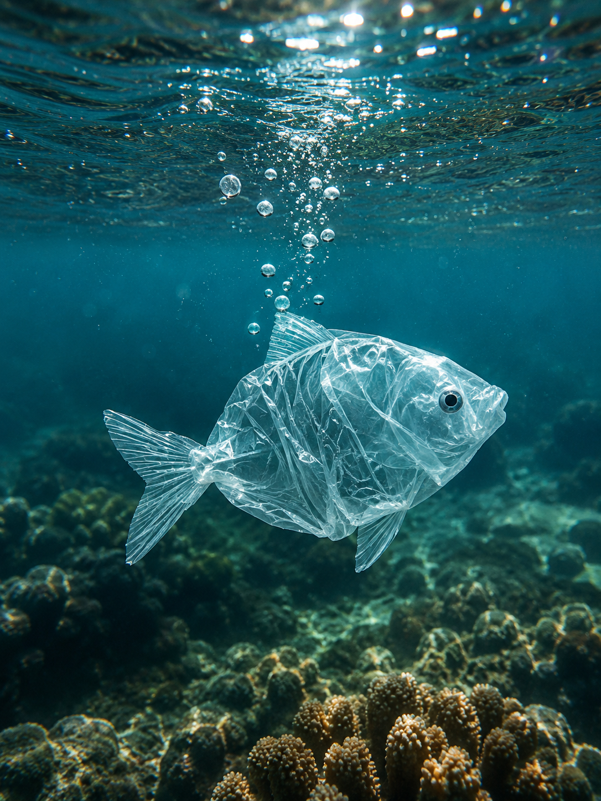
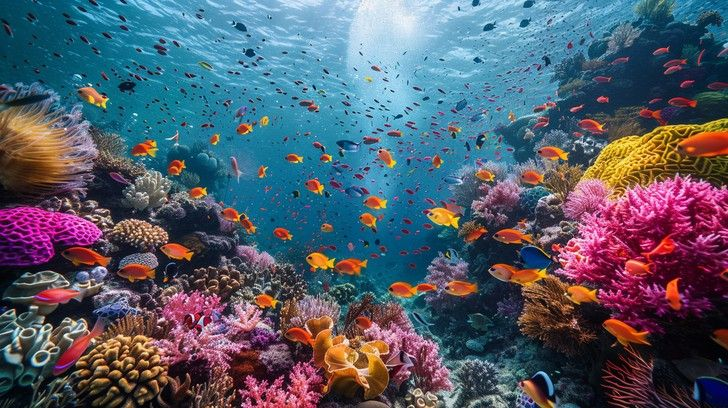
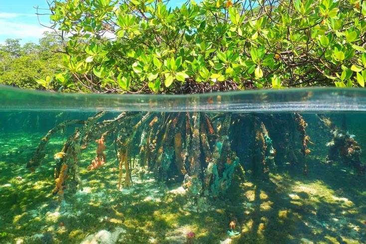
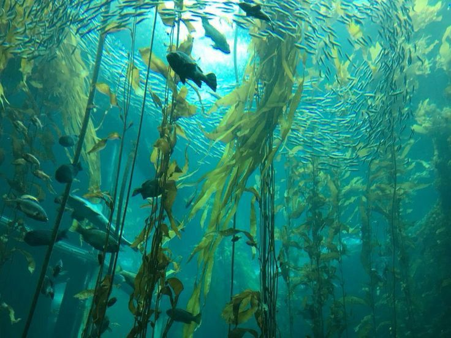
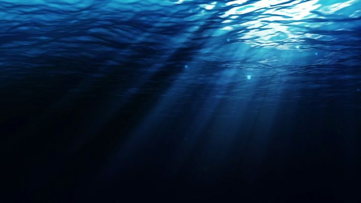

Curiosidades e Descobertas
Explore fatos fascinantes sobre o mundo submarino
Curiosidades
Produção de Oxigênio
O oceano produz mais de 50% do oxigênio que respiramos, principalmente através do fitoplâncton.
Bioluminescência
Cerca de 90% das criaturas que vivem nas profundezas oceânicas são bioluminescentes, capazes de produzir sua própria luz.
Fossa das Marianas
A Fossa das Marianas possui mais de 11.000 metros de profundidade, o ponto mais profundo conhecido dos oceanos.
Maior Estrutura Viva
A Grande Barreira de Corais da Austrália é a maior estrutura viva do planeta, visível do espaço.
Pressão nas Profundezas
A pressão no fundo do oceano pode ser mais de 1.000 vezes maior que ao nível do mar.
Velocidade do Som
O som viaja 4 vezes mais rápido na água do que no ar, permitindo que baleias se comuniquem a grandes distâncias.
Notícias e Descobertas

15 de maio de 2026
Nova Espécie de Coral Descoberta
Cientistas identificaram uma nova espécie de coral resistente ao aquecimento global em águas profundas do Pacífico.

3 de junho de 2026
População de Baleias em Recuperação
Estudos mostram aumento de 20% na população de baleias jubarte após décadas de esforços de conservação.

8 de junho de 2026
Tecnologia para Limpeza Oceânica
Novo sistema de drones marinhos consegue coletar plástico de forma autônoma, removendo toneladas de resíduos.
Ecossistemas Marinhos

Recifes de Coral
Ecossistemas marinhos tropicais que abrigam cerca de 25% de todas as espécies marinhas do planeta, apesar de ocuparem menos de 1% do fundo oceânico.
- Formados por colônias de pólipos de coral
- Servem como berçário para peixes juvenis
- Protegem as costas da erosão
- Ameaçados pelo branqueamento devido ao aquecimento
Manguezais
Ecossistemas costeiros onde entre árvores adaptadas crescem em água salobra, servindo como parte em áreas entre ambientes terrestres e marinhos.
- Filtram poluentes e sedimentos
- Protegem contra tempestades e tsunamis
- Servem como berçário para peixes e crustáceos
- Armazenam grandes quantidades de carbono


Florestas de Kelp
Densas formações de algas marinhas gigantes que crescem em águas temperadas e frias, criando habitats complexos.
- Crescem até 30 cm por dia
- Abrigam centenas de espécies
- Protegem regiões costeiras de tempestades
- Importantes para a pesca comercial
Mar Profundo
A região mais extensa e menos explorada do planeta, caracterizada por total escuridão, pressão extrema e temperaturas baixas.
- Representa 95% do volume oceânico
- Abriga criaturas bioluminescentes
- Possui fontes hidrotermais únicas
- Descobertas constantes de novas espécies

Conservação Marinha
Cada um de nós pode contribuir para a proteção dos oceanos. Pequenas
ações fazem grande diferença
quando todos participam.
Reduza o Plástico
Evite plásticos descartáveis, use sacolas reutilizáveis e escolha produtos com embalagens sustentáveis.
Consumo Consciente
Escolha frutos do mar de fontes sustentáveis e certificadas, evitando espécies ameaçadas de extinção.
Principais Ameaças aos Oceanos
Poluição por Plástico
Mais de 8 milhões de toneladas de plástico entram nos oceanos anualmente, prejudicando a vida marinha e entrando na cadeia alimentar.
Aquecimento Global
O aumento da temperatura oceânica causa branqueamento de corais, alteração de correntes marinhas e perda de habitat.
Pesca Predatória
A sobrepesca esgota populações de peixes mais rápido do que elas podem se reproduzir, desequilibrando ecossistemas inteiros.
Acidificação Oceânica
O excesso de CO₂ absorvido pelos oceanos torna a água mais ácida, prejudicando organismos com conchas e esqueletos calcários.